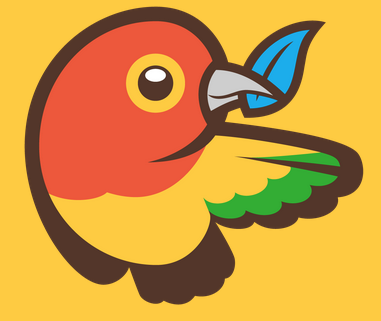
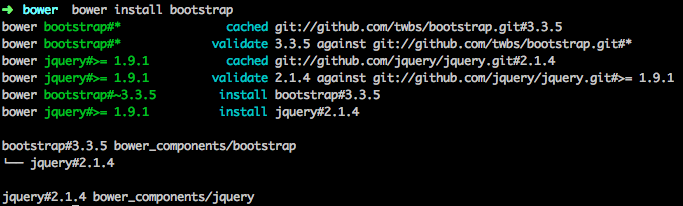
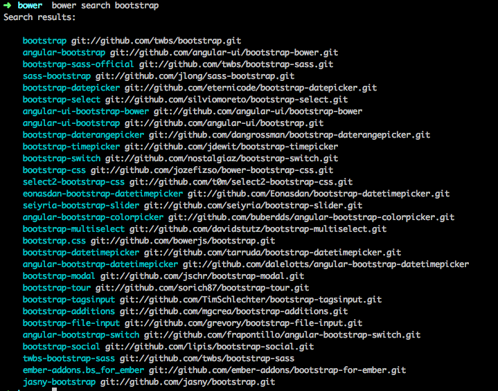
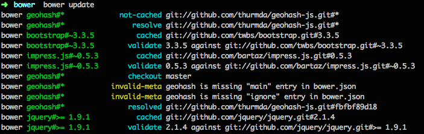
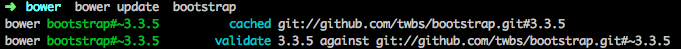
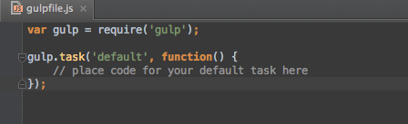
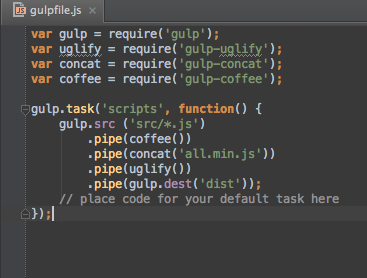
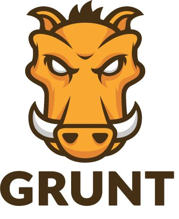
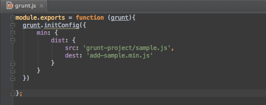
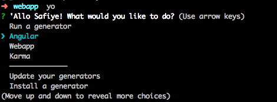

Popüler front-end araçları
Teknolojinin geldiği konum ve ulaşılabilirliğinin artmasıyla web teknolojileri hayatımızda farklı bir noktaya yükseldi. Genel anlamda gelişen teknolojide önyüz kodlayıcıları için faydalı bazı araçları tanıtacağım.
Bower

Bower bir front-end kütüphanesidir. Diğerlerinden ayıran özelliği ise projemizde kullanacağımız paketi kurduğumuzda bu paketin çalışması için gerekli olan diğer paketleri de kurması.
Mesela bootstrap’ı indirdiğimizde jquery’ide indiriyor.
Kurulumu:
Npm kullanarak kuracağız. Bower paket yöneticisini kullanabilmemiz için bilgisayarımızda nodejs ve git’in kurulu olması gerekiyor.
npm install -g bower
Paket Kurulumu:
Şimdi binlerce paket içerisinden istediğimizi kullanabiliriz.
bower install bootstrap
Çıktısı:

Kulanmak istediğimiz paketin tam adını, github proje linkini, proje linkini ya da github proje uzantısını yazarak kurabiliriz.
bower install twbs/bootstrap
bower install git://github.com/twbs/bootstrap
bower install http://example.com/script.js
init
Bower’ın bir diğer güzel özelliği ise projemizde kullandıgımız paketleri
bower init
komutu ile json dosyası olarak saklaması ve dosya sayesinde aynı paketleri baska projelerde de kullanabilmesi. Bu sayede farklı bir projede yine aynı paketleri kullanacaksak yaptığımız işlem sayısını azaltmıs oluyoruz.
Oluşturduğumuz bu bower.json dosyasını kullanmak istediğimiz projenin dizinine ekleyip
bower install
kodunu çalıştırmamız yeterli oluyor.
Diyelim ki bower init komutunu çalıştırdıktan sonra projeye yeni paketler dahil ettik ve bunlarıda .json dosyamıza eklemek istiyoruz. Bu işlemide
bower install paket-adi --save
ya da
bower install paket-adi -s
komutu ile yapabiliyoruz.
list
Projenizde kullandığınız paketleri
bower list
komutuyla konsolda listeyebilirsiniz.
search
Aradığınız paketin adıyla arama yaptırabilirsiniz.
bower search paket-adi
Çıktısı: 
update
Kurduğumuz paketleri güncellemek istersek
bower update
komutu ile kurulu bütün paketleri,
çıktısı:

bower update paket-adi
ile de sadece güncellemek istediğimiz paketi güncelletebiliyoruz.
çıktısı:

uninstall
Kurduğumuz paketi projeden kaldırmak istersek,
bower uninstall paket-adi
komutunu kullanıyoruz, json dosyasından da kaldırmak için –save komutunu eklememiz gerekiyor.
Bower’ın özellikleri tabii ki bu kadar değil. www.bower.io adresinden bütün detaylara ulaşabilirsiniz.
Gulp
Bu araç sayesinde projemizin rutin işlerini otomatize edebiliyoruz. Hepimiz web sayfasını yayına almadan önce bazı bazı işlemleri tekrar tekrar yapıyoruz. Kullandığımız fotoğrafların boyutlarını değiştirmek, css dosyamızı küçültmek, yazdığımız js’leri tek dosya haline getirmek gibi. Bu ve bunlar gibi rutin işlerimizi gulp sayesinde otomatize edebiliriz.
Şimdi ilk olarak gulpjs'i makinemize kuralım. Gulp da bower ve grunt gibi npm’e gereksinim duyuyor. Gulp kullanacağımız modülleri npm veritabanından çekiyor.
Kurulumu:
npm install gulp -g
Projemize ya da localimize kurduktan sonra gulpfile.js dosyası oluşturup yaptıracağımız görevleri buraya yazıyoruz.

Verdiğimiz görevler için kurulan plugin ya da paketler ise node_modules/ klasörü altına ekleniyor.
Sonrasında ise işimize yarayacak paketleri bulup entegre edeceğiz. Bu paketleride istersek gulpjs’in sayfasından istersekte npmjs’in sayfasından bulabılırız.
npm install paket-adi
yukarıdakı komut satırıda paketleri kurmaya yarıyor. Paket kurulumundan sonra kurduğumuz paketin parametrelerini gulpfile.js dosyamıza eklememiz gerekiyor. Aşağıdaki gulpfile.js dosyasında gulp-concat, gulp-coffee ve gulp-uglify eklentileri kullanılmış.

Kurduğumuz paketler proje dosyamızın içindeki node_modules dosyasına ekleniyor.
İstediğimiz paketleri kurduktan ve gulpfile.js dosyasına ekledikten sonra ise komut satırına
gulp
yazdığımızda bütün görevleri çalıştırıyor.
Gulpjs için daha detaylı bilgiye www.gulpjs.com adresinden ulaşabilirsiniz.
Grunt

Gruntta tıpkı gulpjs gibi bir iş kolaylaştırıcı. Kullandığı modülleri npm veri tabanından çekiyor.
Kurulumu:
npm install grunt
Grunt için kullanacağımız plug-in ya da modüller içinde
npm install paket-adi
komutunu kullabiliyoruz.
Kurduktan sonra node_modules/ klasörü oluşturuyor, bu klasörde kuracağımız paket ve pluginler tutuluyor.
Şimdi grunt.js dosyası oluşturup görevlerimizi oraya yazacağız. Genel olarak gulpjs'le aynı yapıda. Farklılıkları görev yazma aşamasında ortaya çıkıyor.

Yukarıda kaynağı grunt-project dizininde bulunan sample.js dosyasını add-sample.min.js dosyasına dönüştürecek görev için yazılmış kodlar yer alıyor.
Kurduğumuz plugin'lerin açıklamaları ve parametreleri github ya da kendi sayfalarında yazıyor.
Pluginleri gruntjs’in sayfasından ya da npmjs’in sayfasından bulup kurabilirsiniz. Kullanabileceğimiz bütün metotlara gruntjs'in API sayfasından ulaşabilirsiniz.
Daha detaylı bilgi için www.gruntjs.com adresini inceleyebilirsiniz.
Yeoman
Yeoman npm'i kullanarak sürecimizi hızlandıran bir diğer front-end aracımız. Projemiz için template olusturuyor.
Bilgisayarımıza kurabilmek için node.js ve git in yüklü olması gerekıyor.
Kurulumu
npm install yo
komutuyla yükleyebiliyoruz.
Yeoman gruntjs ve bower araçlarını default olarak projeye dahil ediyor.
oluşturmak istediğimiz projede kullanacağımız paketleri generators ya da npmjs sayfasından bulup inceleyebilirsiniz.
Paket kurulumu için:
npm install --global paket-adi
Paketi kurup yo komutunu çalıştırarak ya da
yo paket-adi
komutunu çalıştırarak template oluşturabiliriz.
Çalıştırmak için komut satırına:
yo
komutunu yazıyoruz.

Yukarıda yo komutundan sonra sistemde yüklü template yapılarını secip kullanabileceğimiz gibi install a generator komutunu seçerekte yeni template yükleyebiliyoruz.
Yukarıda bahsettiğim bütün araçlar paket kurmak için npm'e ihtiyac duyuyor. Bu yuzden plug-in ve paket kurulumları aynı.
Yeoman ile html5 template’i oluşturmak istiyorsak
npm install --global generator-h5bp
komutunu kullanarak önce html5 paketini indiriyoruz. Sonrada
yp h5bp
komutu ile template oluşturuyoruz.
Detaylı bilgi için www.yeoman.com adresini inceleyebilirsiniz.
comments powered by Disqus